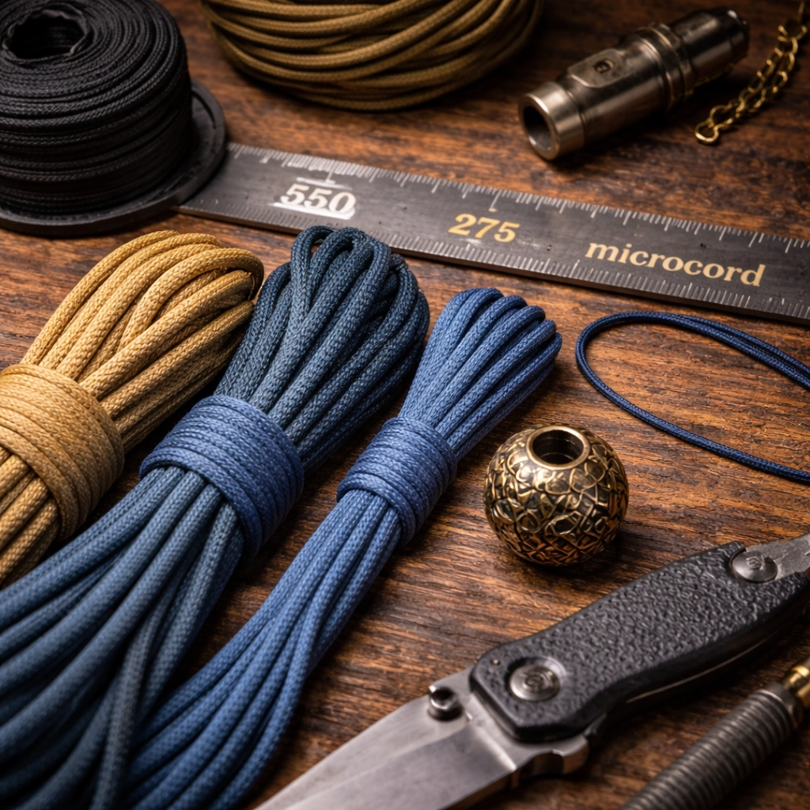
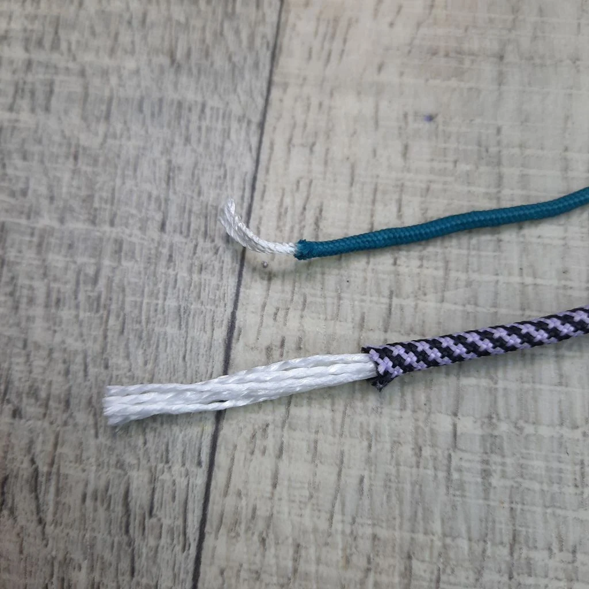
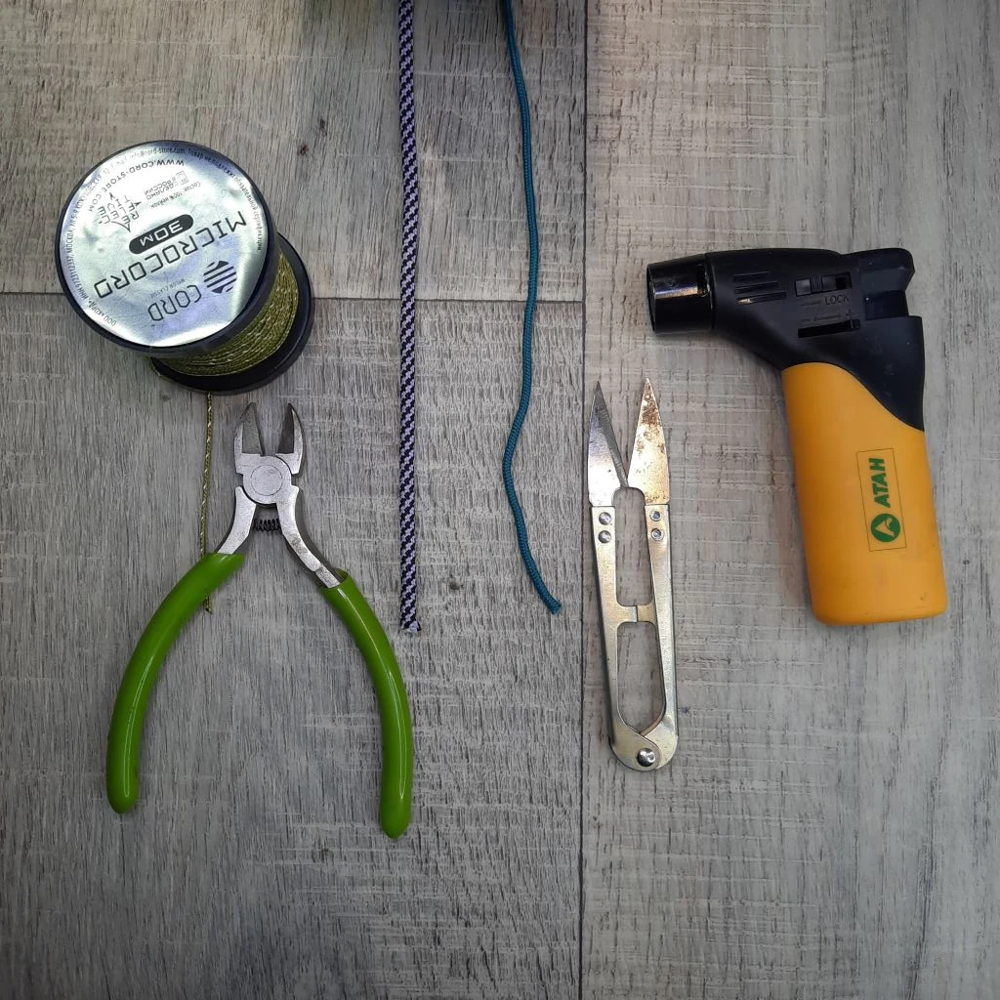

Паракорд — это прочный синтетический шнур с плетёной оплёткой и внутренним сердечником, который используют для плетения темляков, брелков, подвесок на телефон, небольших обвесов и других компактных изделий из шнура.
Его ценят за сочетание гибкости, износостойкости и удобства в работе. Именно поэтому паракорд давно стал базовым материалом не только для темляков, но и для небольших практических и декоративных изделий из шнура.
Для первого изделия проще всего взять 275 или 550. Из инструментов достаточно острых ножниц или кусачек и обычной зажигалки. Этого хватит, чтобы попробовать простой темляк, брелок или компактную подвеску.
Ниже — короткий практический разбор: как устроен паракорд, чем отличаются microcord, 275 и 550, какой формат удобнее для старта и что действительно нужно из инструментов, чтобы начать плести без лишнего усложнения.
Содержание
- Что такое паракорд и как он появился
- Что находится внутри паракорда
- Основные размеры: microcord, 275 и 550
- Что можно сплести из паракорда
- Минимум инструментов для плетения
- Как хранить паракорд
- Что выбрать для начала
- Что делать дальше
- Частые вопросы
Что такое паракорд и как он появился
Название paracord происходит от слов parachute cord — «парашютный шнур». Исторически этот материал действительно связан с парашютной тематикой. После появления нейлона в 1930-х годах синтетические шнуры и ткани постепенно вытеснили шёлк из военного снаряжения, а затем получили и более широкое применение.
Сегодня под словом «паракорд» обычно понимают плетёный синтетический шнур, который используют в темляках, брелках, подвесках, браслетах, оплётках и других небольших проектах своими руками. Именно поэтому он давно стал базовым материалом для любительского и прикладного плетения.
Для темляков, подвесов, брелков и небольших изделий паракорд подходит отлично, но путать шнур для рукоделия с профессиональным страховочным снаряжением не стоит: это разные задачи и разный класс изделий.
Что находится внутри паракорда

Классический паракорд устроен по схеме оболочка плюс сердечник. Снаружи идёт плотная плетёная оплётка, которая защищает шнур от истирания и помогает ему держать форму. Внутри находятся несущие нити сердечника — именно они дают основной запас прочности.
На фото это видно особенно наглядно: цветная внешняя оболочка отделена от белых внутренних волокон. Это помогает понять, почему шнур одновременно остаётся гибким и прочным, а также почему разные форматы отличаются не только толщиной, но и общим ощущением в работе.
У 550-го паракорда чаще всего говорят о внешней оплётке и семи внутренних нитях сердечника. У более тонких вариантов устройство проще, но общий принцип остаётся тем же: внешняя оболочка отвечает за защиту и износостойкость, а внутренние волокна — за рабочую прочность.
Основные размеры: microcord, 275 и 550
Для большинства задач в плетении из паракорда достаточно понимать разницу между тремя популярными форматами. Именно их обычно сравнивают, когда выбирают шнур под первое изделие или под конкретный размер будущего темляка, брелка или подвески.
- Microcord — самый тонкий вариант из этой тройки. Обычно его диаметр около 1,18 мм, а заявленная прочность — около 100 lb. Такой шнур берут для тонких декоративных деталей, аккуратных вставок и компактных элементов, где обычный паракорд уже выглядит слишком массивно.
- Paracord 275 — промежуточный формат. Его типичный диаметр около 2,4 мм, а заявленная прочность — 275 lb. Для темляков, небольших брелков и компактных подвесок он часто оказывается очень удобным: результат получается заметным, но не слишком толстым и громоздким.
- Paracord 550 — классический формат. Диаметр обычно около 4 мм, а минимальная прочность — 550 lb. Это самый известный и самый универсальный вариант: он хорошо читается в плетении, уверенно ощущается в руках и подходит для большинства первых экспериментов.
Если вопрос стоит так: какой диаметр паракорда выбрать для первого изделия, то на практике чаще всего выбирают именно 275 или 550. Первый даёт более компактный результат, второй — более классический и объёмный. Microcord обычно используют не как базу для первого изделия, а как более тонкий вспомогательный материал.
Что можно сплести из паракорда
Паракорд удобен тем, что один и тот же материал подходит сразу для нескольких близких задач. Из него делают темляки, брелки, подвески на телефон, небольшие декоративные обвесы, узлы и короткие шнурки с бусиной. Поэтому освоенная техника редко остаётся только в одной нише.
Начать с простого темляка удобно по практической причине: изделие короткое, понятное по конструкции и не требует большого расхода шнура. На таком примере легче увидеть рисунок плетения, почувствовать натяжение и понять, как ведут себя 275 и 550 в работе.
Во многих мастер-классах техника показана именно на примере темляка, потому что это удобный учебный формат. Но тот же принцип потом можно использовать и для брелка, подвески на телефон, небольшого обвеса или другого компактного изделия из паракорда.
Популярные техники плетения из паракорда:
- Плетение «змейка» — простое волнистое плетение, отлично подходит для начинающих
- Плетение «кобра» — базовая плотная техника с ровным плоским рисунком
- Плетение «рыбий хвост» — плоское плетение с характерным рисунком «ёлочки»
- Паракорд волны «Волна Фенрира» — рельефное плетение с выраженными диагоналями
- Плетение темляка на ноже — базовая инструкция для начинающих
Все эти техники подходят для создания темляков, брелков и подвесок. Выбирайте технику в зависимости от желаемого результата и уровня сложности.
Минимум инструментов для плетения

Для начала не нужен большой набор. Реальный минимум очень простой: сам паракорд, кусачки или ножницы и зажигалка. Этого уже достаточно, чтобы отрезать шнур, подготовить концы и собрать простой темляк, небольшой брелок или тренировочный образец узла.
- Паракорд. Основа всей работы. Для первых изделий удобнее всего брать 275 или 550 — в зависимости от того, какой объём вы хотите получить.
- Кусачки или ножницы. Нужны для аккуратного реза. Чем ровнее срез, тем проще потом подготовить конец шнура.
- Зажигалка. Используется для лёгкого оплавления синтетического конца, чтобы шнур не распускался и лучше входил в отверстие бусины или в плотное плетение.
Если говорить совсем практично, то резать паракорд лучше острыми ножницами или кусачками, чтобы срез получался ровным. После этого конец обычно слегка оплавляют зажигалкой: так синтетические волокна фиксируются, шнур меньше пушится и с ним удобнее работать дальше.
Всё остальное — зажимы, пинцеты, шило, иглы, специальные фиды и приспособления для плетения — уже относится скорее к удобству, а не к обязательному стартовому набору. Такие вещи действительно помогают, если вы плетёте часто или работаете с плотными узлами, но начать можно и без них.
Как хранить паракорд
Паракорд — синтетический материал, поэтому он не боится влаги и не гниёт. Но правильное хранение помогает сохранить его свойства и внешний вид на годы.
- Сухое место. Храните паракорд в сухом помещении. Хотя синтетика не гниёт, длительная сырость может привести к появлению затхлого запаха.
- Избегайте прямых солнечных лучей. Ультрафиолет со временем разрушает синтетические волокна. Если паракорд хранится на свету, он может потерять прочность и выцвести.
- Удобная форма хранения. Можно сворачивать в бухты, наматывать на катушки или использовать специальные органайзеры. Главное — чтобы шнур не запутывался.
- Подписывайте катушки. Если у вас много разных цветов и типов паракорда, подпишите каждую катушку — так легче найти нужный шнур для проекта.
При правильном хранении паракорд сохраняет свои свойства десятилетиями. Это одна из причин, почему его любят использовать для EDC-наборов и аварийных комплектов.
Что выбрать для начала
Для старта проще всего ориентироваться не на характеристики сами по себе, а на тип изделия и желаемый результат.
- 550 — если нужен классический, более объёмный темляк или хорошо читаемое плетение в первом изделии;
- 275 — если хочется более компактный и аккуратный результат: небольшой темляк, брелок или подвеска;
- microcord — когда уже есть опыт и нужна более тонкая декоративная работа или дополнительные вставки.
Самый простой старт — взять один отрезок паракорда, ножницы или кусачки и зажигалку, а затем попробовать базовый узел или простой темляк. После этого уже легко понять, хочется ли двигаться дальше в сторону брелков, телефонных подвесок, узлов или более плотных техник плетения.
Если хотите сразу перейти от теории к практике, можно сначала посмотреть раздел мастер-классов по темлякам и после этого перейти к более компактным форматам вроде брелка с бусиной из паракорда.
Что делать дальше
Если этот материал уже разобран, дальше лучше перейти к ближайшим связанным темам — без длинного списка и лишних повторов.
Частые вопросы
Какой паракорд лучше взять для первого изделия: 275 или 550?
Если нужен более компактный результат, чаще выбирают 275. Если хочется классический, более объёмный и универсальный вариант, удобнее начать с 550. Оба подходят для первых опытов, а microcord обычно оставляют для более тонких декоративных задач.
Что нужно для плетения из паракорда на старте?
Для начала достаточно самого шнура, ножниц или кусачек и обычной зажигалки. Этого хватает, чтобы отрезать паракорд, подготовить концы и попробовать простой темляк, брелок, подвеску или базовый узел.
Какой диаметр паракорда лучше подходит для темляка, брелка или подвески?
Для компактного изделия чаще выбирают 275. Для более классического, объёмного и универсального варианта обычно берут 550. Microcord используют в более тонких декоративных задачах и реже выбирают как основной шнур для самого первого проекта.
Что находится внутри паракорда?
Снаружи у паракорда плетёная оплётка, а внутри — сердечник из несущих нитей. Именно это сочетание и даёт шнуру гибкость, форму и основной запас прочности.
Чем резать паракорд, чтобы он не пушился?
Лучше использовать острые ножницы или кусачки, чтобы срез был ровным. После этого конец слегка оплавляют зажигалкой — так шнур не распускается и меньше пушится.
Подходит ли microcord для первого изделия?
Подходит, но для самого первого опыта он не всегда самый удобный вариант. Microcord тоньше, поэтому с ним сложнее увидеть рисунок узла и контролировать натяжение. Для старта обычно проще 275 или 550.
Почему во многих примерах берут именно темляк?
Потому что темляк — удобный учебный формат: он короткий, не требует много шнура и позволяет быстро увидеть, как работает узел или простое плетение. После этого ту же технику уже легко перенести на брелок, подвеску или другой компактный проект.
Зачем оплавлять концы шнура?
Это помогает зафиксировать синтетические волокна, чтобы конец не распускался и с ним было удобнее работать дальше — продевать в отверстие бусины, подтягивать в узел или заводить в плотное плетение.
Как хранить паракорд, чтобы он не терял свойств?
Паракорд лучше хранить в сухом месте, вдали от прямых солнечных лучей. Можно сворачивать в бухты или наматывать на катушки. Синтетические волокна не боятся влаги, но длительная сырость может привести к появлению запаха.
Сколько паракорда нужно на темляк?
Для простого темляка длиной 10 см обычно хватает 1-1.5 метров паракорда 550 или 275. Точный расход зависит от техники плетения: змейка расходует меньше, кобра и рыбий хвост — больше.